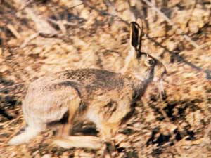

LEPRE (HARE)

| Climate/Terrain | Colline, montagne, pianure e foreste non artiche |
| Frequency | Common |
| Organization | Solitary |
| Activity Cycle | Any |
| Diet | Erbivoro |
| Intelligence | Animal (1) |
| Treasure | Nessuno |
| Alignment | Neutral |
| No. Appearing | 1 |
| Armor Class | 7 |
| Movement | 18 |
| Hit Dice | 1/2 |
| Thac0 | 20 |
| No. of Attacks | Nessuno |
| Damage / Attacks | Nessuno |
| Special Attacks | Nessuno |
| Special Defenses | Mimetizzarsi (vedi sotto) |
| Magic Resistance | Nessuna |
| Size | Tiny |
| Morale | Unreliable (3) |
| XP value | 5 |
Descrizione
Questo Mammifero di medie dimensioni è caratterizzato da orecchie lunghe e zampe molto sviluppate. La lepre adulta presenta una lunghezza testa-corpo di 48-67 cm, le orecchie di 8-11 cm, la coda di 3-11 cm e il peso di 3-5 kg. La pelliccia è marrone-grigiastra, con tonalità più chiare sul ventre e la coda è scura sulla parte superiore.
Combat
La struttura corporea della lepre è caratterizzata dallo scheletro leggero e dalle lunghe zampe, che la rendono resistente alla corsa e in grado di raggiungere velocità di 80 km/h e fare balzi di 4 metri. La lepre, dunque, può essere un animale particolarmente attivo e dinamico, ma è in grado, in caso di pericolo, di appiattirsi al suolo e di rimanere totalmente immobile mimetizzandosi con il terreno (60% di riuscita).
Habitat/Society
La lepre è un animale crepuscolare e notturno, più raramente va in giro di giorno. La dieta della lepre è costituita da vegetali.
Ecology
La lepre è cacciata come cacciagione. Una lepre intera ha un valore di mercato di 1 s.p.